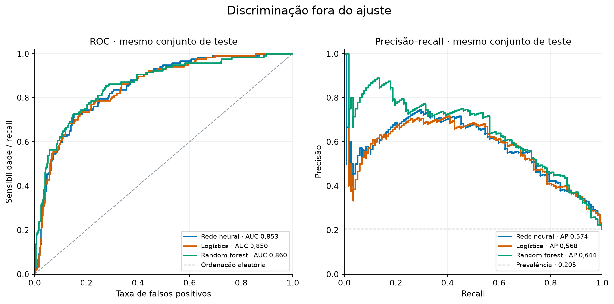
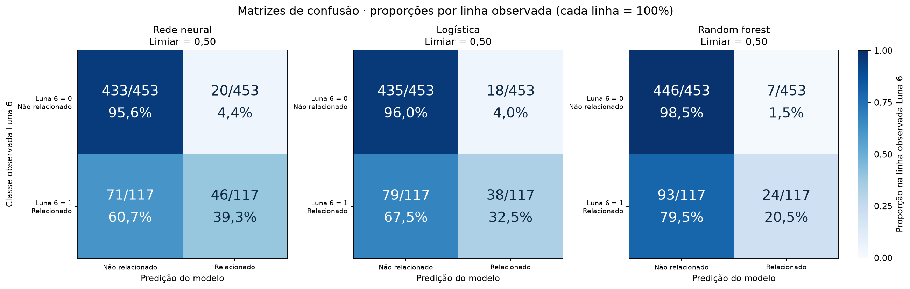
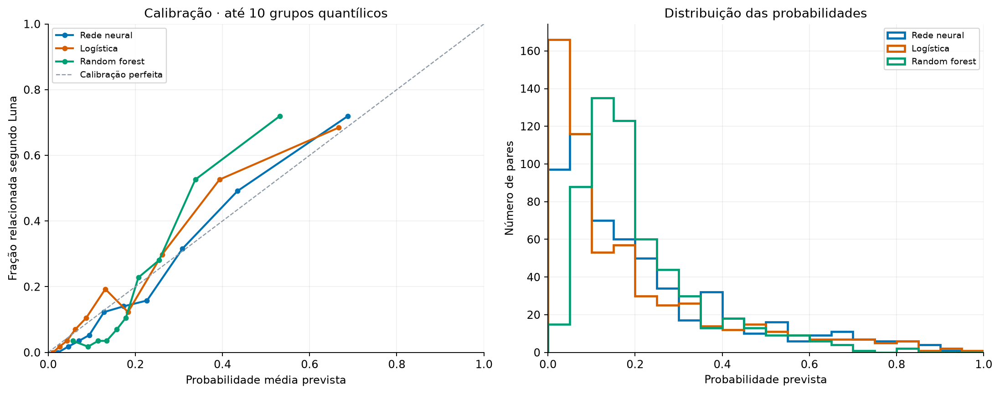

Desempenho no conjunto separado para teste
| Modelo | ROC-AUC ↑ | AP ↑ | Log loss ↓ | Brier ↓ | Acurácia ↑ | Ac. balanceada ↑ | Precisão ↑ | Recall ↑ | F1 ↑ |
|---|---|---|---|---|---|---|---|---|---|
| Rede neural | 0,8528 | 0,5736 | 0,3732 | 0,1170 | 0,8404 | 0,6745 | 0,6970 | 0,3932 | 0,5027 |
| Logística | 0,8496 | 0,5676 | 0,3751 | 0,1188 | 0,8298 | 0,6425 | 0,6786 | 0,3248 | 0,4393 |
| Random forest | 0,8598 | 0,6439 | 0,3853 | 0,1192 | 0,8246 | 0,5948 | 0,7742 | 0,2051 | 0,3243 |
↑: maior é melhor; ↓: menor é melhor. ROC-AUC e AP avaliam a ordenação; log loss e Brier avaliam as probabilidades. Acurácia, precisão, recall e F1 dependem do limiar. Rótulo positivo: conteúdo relacionado ao tema da entrada. AP de referência para ordenação aleatória: prevalência do teste, 0,2053.
Discriminação, decisões e calibração



Resultados por entrada
As mesmas entradas estão representadas em treino e teste; os tópicos do teste ficaram inteiramente fora do treino. Cada linha abaixo descreve somente os pares de teste daquela entrada; grupos pequenos tornam estas métricas mais instáveis.
| Entrada | Modelo | N | Luna = 1 | ROC-AUC ↑ | AP ↑ | Log loss ↓ | Brier ↓ | Acurácia ↑ | Ac. balanceada ↑ | Precisão ↑ | Recall ↑ | F1 ↑ |
|---|---|---|---|---|---|---|---|---|---|---|---|---|
| nova_01 | Rede neural | 57 | 24 | 0,7727 | 0,6510 | 0,5644 | 0,1954 | 0,6842 | 0,6705 | 0,6364 | 0,5833 | 0,6087 |
| nova_01 | Logística | 57 | 24 | 0,7538 | 0,6136 | 0,6114 | 0,2145 | 0,6491 | 0,6174 | 0,6250 | 0,4167 | 0,5000 |
| nova_01 | Random forest | 57 | 24 | 0,8422 | 0,7986 | 0,5430 | 0,1822 | 0,6842 | 0,6364 | 0,8000 | 0,3333 | 0,4706 |
| nova_02 | Rede neural | 57 | 7 | 0,9371 | 0,7996 | 0,2397 | 0,0715 | 0,8947 | 0,5714 | 1,0000 | 0,1429 | 0,2500 |
| nova_02 | Logística | 57 | 7 | 0,9371 | 0,8203 | 0,2245 | 0,0675 | 0,8947 | 0,5714 | 1,0000 | 0,1429 | 0,2500 |
| nova_02 | Random forest | 57 | 7 | 0,8857 | 0,6133 | 0,2955 | 0,0881 | 0,8772 | 0,5000 | 0,0000 | 0,0000 | 0,0000 |
| nova_03 | Rede neural | 57 | 9 | 0,8657 | 0,7031 | 0,3187 | 0,0957 | 0,8772 | 0,6111 | 1,0000 | 0,2222 | 0,3636 |
| nova_03 | Logística | 57 | 9 | 0,8426 | 0,6260 | 0,3292 | 0,0989 | 0,8772 | 0,6111 | 1,0000 | 0,2222 | 0,3636 |
| nova_03 | Random forest | 57 | 9 | 0,8241 | 0,6214 | 0,3616 | 0,1094 | 0,8421 | 0,5000 | 0,0000 | 0,0000 | 0,0000 |
| nova_04 | Rede neural | 57 | 14 | 0,7209 | 0,5354 | 0,4900 | 0,1629 | 0,7719 | 0,5357 | 1,0000 | 0,0714 | 0,1333 |
| nova_04 | Logística | 57 | 14 | 0,7292 | 0,5666 | 0,5029 | 0,1656 | 0,7719 | 0,5357 | 1,0000 | 0,0714 | 0,1333 |
| nova_04 | Random forest | 57 | 14 | 0,8056 | 0,6904 | 0,4782 | 0,1568 | 0,7544 | 0,5000 | 0,0000 | 0,0000 | 0,0000 |
| nova_05 | Rede neural | 57 | 8 | 0,7934 | 0,4458 | 0,3368 | 0,1005 | 0,8596 | 0,5523 | 0,5000 | 0,1250 | 0,2000 |
| nova_05 | Logística | 57 | 8 | 0,7602 | 0,3947 | 0,3433 | 0,1035 | 0,8246 | 0,4796 | 0,0000 | 0,0000 | 0,0000 |
| nova_05 | Random forest | 57 | 8 | 0,7959 | 0,6173 | 0,3483 | 0,1010 | 0,8596 | 0,5000 | 0,0000 | 0,0000 | 0,0000 |
| nova_06 | Rede neural | 57 | 4 | 0,8774 | 0,4801 | 0,2703 | 0,0723 | 0,9298 | 0,7311 | 0,5000 | 0,5000 | 0,5000 |
| nova_06 | Logística | 57 | 4 | 0,8679 | 0,4774 | 0,2327 | 0,0614 | 0,9474 | 0,8561 | 0,6000 | 0,7500 | 0,6667 |
| nova_06 | Random forest | 57 | 4 | 0,8679 | 0,6595 | 0,2659 | 0,0656 | 0,9298 | 0,5000 | 0,0000 | 0,0000 | 0,0000 |
| nova_07 | Rede neural | 57 | 7 | 0,7943 | 0,3996 | 0,3160 | 0,0942 | 0,8947 | 0,5714 | 1,0000 | 0,1429 | 0,2500 |
| nova_07 | Logística | 57 | 7 | 0,7886 | 0,4123 | 0,3157 | 0,0951 | 0,8772 | 0,5000 | 0,0000 | 0,0000 | 0,0000 |
| nova_07 | Random forest | 57 | 7 | 0,8486 | 0,4524 | 0,3351 | 0,0975 | 0,8772 | 0,5000 | 0,0000 | 0,0000 | 0,0000 |
| nova_08 | Rede neural | 57 | 28 | 0,7426 | 0,6550 | 0,5941 | 0,1997 | 0,7544 | 0,7549 | 0,7333 | 0,7857 | 0,7586 |
| nova_08 | Logística | 57 | 28 | 0,7562 | 0,6652 | 0,6064 | 0,2069 | 0,7193 | 0,7186 | 0,7308 | 0,6786 | 0,7037 |
| nova_08 | Random forest | 57 | 28 | 0,7734 | 0,7458 | 0,5951 | 0,2035 | 0,7018 | 0,6995 | 0,7619 | 0,5714 | 0,6531 |
| nova_09 | Rede neural | 57 | 10 | 0,8213 | 0,4816 | 0,3823 | 0,1218 | 0,8070 | 0,4894 | 0,0000 | 0,0000 | 0,0000 |
| nova_09 | Logística | 57 | 10 | 0,8128 | 0,4528 | 0,4021 | 0,1278 | 0,8070 | 0,4894 | 0,0000 | 0,0000 | 0,0000 |
| nova_09 | Random forest | 57 | 10 | 0,8915 | 0,7403 | 0,3596 | 0,1154 | 0,8246 | 0,5000 | 0,0000 | 0,0000 | 0,0000 |
| nova_10 | Rede neural | 57 | 6 | 0,9869 | 0,8734 | 0,2198 | 0,0559 | 0,9298 | 0,6667 | 1,0000 | 0,3333 | 0,5000 |
| nova_10 | Logística | 57 | 6 | 0,9902 | 0,9151 | 0,1827 | 0,0472 | 0,9298 | 0,6667 | 1,0000 | 0,3333 | 0,5000 |
| nova_10 | Random forest | 57 | 6 | 0,9739 | 0,9048 | 0,2710 | 0,0724 | 0,8947 | 0,5000 | 0,0000 | 0,0000 | 0,0000 |
ROC-AUC e acurácia balanceada são omitidas quando o grupo não contém as duas classes. Recall e AP são omitidos quando não há positivos; precisão é zero quando nenhum positivo é previsto.
Distribuição das linhas entre treino e teste
| Entrada | Treino | Teste | Relacionados no teste | Não relacionados no teste |
|---|---|---|---|---|
| nova_01 | 225 | 57 | 24 | 33 |
| nova_02 | 225 | 57 | 7 | 50 |
| nova_03 | 225 | 57 | 9 | 48 |
| nova_04 | 225 | 57 | 14 | 43 |
| nova_05 | 225 | 57 | 8 | 49 |
| nova_06 | 225 | 57 | 4 | 53 |
| nova_07 | 225 | 57 | 7 | 50 |
| nova_08 | 225 | 57 | 28 | 29 |
| nova_09 | 225 | 57 | 10 | 47 |
| nova_10 | 225 | 57 | 6 | 51 |
VPP e VPN com as prevalências observadas
A prevalência global do teste é 117/570 = 20,5263%. O valor preditivo positivo (VPP) é a proporção relacionada segundo Luna 6 entre os pares que o modelo marcou como relacionados. O valor preditivo negativo (VPN) é a proporção não relacionada segundo Luna 6 entre os pares que o modelo marcou como não relacionados. O limiar permanece em 0,5.
VPP = Se × π / [Se × π + (1 − Sp) × (1 − π)]VPN = Sp × (1 − π) / [Sp × (1 − π) + (1 − Se) × π]
Se = VP/(VP+FN); Sp = VN/(VN+FP). Usando a prevalência do mesmo grupo, os resultados de Bayes coincidem com VPP = VP/(VP+FP) e VPN = VN/(VN+FN), cujas frações aparecem nas tabelas. Denominador zero é exibido como indefinido; no CSV, o valor numérico fica vazio e a coluna de status registra indefinido.
Conjunto global de teste
| Modelo | N | Prevalência π | Sensibilidade Se | Especificidade Sp | VPP por Bayes | VPN por Bayes |
|---|---|---|---|---|---|---|
| Rede neural | 570 | 117/570 20,5263% | 39,3162% | 95,5850% | 69,6970% 46/66 | 85,9127% 433/504 |
| Logística | 570 | 117/570 20,5263% | 32,4786% | 96,0265% | 67,8571% 38/56 | 84,6304% 435/514 |
| Random forest | 570 | 117/570 20,5263% | 20,5128% | 98,4547% | 77,4194% 24/31 | 82,7458% 446/539 |
Por entrada, com a prevalência própria
Cada entrada usa seus 57 pares de teste e sua própria prevalência de relação temática. São valores descritivos destes grupos; outra prevalência de aplicação pode alterar VPP e VPN.
| Entrada | Modelo | N | Prevalência π | Sensibilidade Se | Especificidade Sp | VPP por Bayes | VPN por Bayes |
|---|---|---|---|---|---|---|---|
| nova_01 | Rede neural | 57 | 24/57 42,1053% | 58,3333% | 75,7576% | 63,6364% 14/22 | 71,4286% 25/35 |
| nova_01 | Logística | 57 | 24/57 42,1053% | 41,6667% | 81,8182% | 62,5000% 10/16 | 65,8537% 27/41 |
| nova_01 | Random forest | 57 | 24/57 42,1053% | 33,3333% | 93,9394% | 80,0000% 8/10 | 65,9574% 31/47 |
| nova_02 | Rede neural | 57 | 7/57 12,2807% | 14,2857% | 100,0000% | 100,0000% 1/1 | 89,2857% 50/56 |
| nova_02 | Logística | 57 | 7/57 12,2807% | 14,2857% | 100,0000% | 100,0000% 1/1 | 89,2857% 50/56 |
| nova_02 | Random forest | 57 | 7/57 12,2807% | 0,0000% | 100,0000% | indefinido 0/0 | 87,7193% 50/57 |
| nova_03 | Rede neural | 57 | 9/57 15,7895% | 22,2222% | 100,0000% | 100,0000% 2/2 | 87,2727% 48/55 |
| nova_03 | Logística | 57 | 9/57 15,7895% | 22,2222% | 100,0000% | 100,0000% 2/2 | 87,2727% 48/55 |
| nova_03 | Random forest | 57 | 9/57 15,7895% | 0,0000% | 100,0000% | indefinido 0/0 | 84,2105% 48/57 |
| nova_04 | Rede neural | 57 | 14/57 24,5614% | 7,1429% | 100,0000% | 100,0000% 1/1 | 76,7857% 43/56 |
| nova_04 | Logística | 57 | 14/57 24,5614% | 7,1429% | 100,0000% | 100,0000% 1/1 | 76,7857% 43/56 |
| nova_04 | Random forest | 57 | 14/57 24,5614% | 0,0000% | 100,0000% | indefinido 0/0 | 75,4386% 43/57 |
| nova_05 | Rede neural | 57 | 8/57 14,0351% | 12,5000% | 97,9592% | 50,0000% 1/2 | 87,2727% 48/55 |
| nova_05 | Logística | 57 | 8/57 14,0351% | 0,0000% | 95,9184% | 0,0000% 0/2 | 85,4545% 47/55 |
| nova_05 | Random forest | 57 | 8/57 14,0351% | 0,0000% | 100,0000% | indefinido 0/0 | 85,9649% 49/57 |
| nova_06 | Rede neural | 57 | 4/57 7,0175% | 50,0000% | 96,2264% | 50,0000% 2/4 | 96,2264% 51/53 |
| nova_06 | Logística | 57 | 4/57 7,0175% | 75,0000% | 96,2264% | 60,0000% 3/5 | 98,0769% 51/52 |
| nova_06 | Random forest | 57 | 4/57 7,0175% | 0,0000% | 100,0000% | indefinido 0/0 | 92,9825% 53/57 |
| nova_07 | Rede neural | 57 | 7/57 12,2807% | 14,2857% | 100,0000% | 100,0000% 1/1 | 89,2857% 50/56 |
| nova_07 | Logística | 57 | 7/57 12,2807% | 0,0000% | 100,0000% | indefinido 0/0 | 87,7193% 50/57 |
| nova_07 | Random forest | 57 | 7/57 12,2807% | 0,0000% | 100,0000% | indefinido 0/0 | 87,7193% 50/57 |
| nova_08 | Rede neural | 57 | 28/57 49,1228% | 78,5714% | 72,4138% | 73,3333% 22/30 | 77,7778% 21/27 |
| nova_08 | Logística | 57 | 28/57 49,1228% | 67,8571% | 75,8621% | 73,0769% 19/26 | 70,9677% 22/31 |
| nova_08 | Random forest | 57 | 28/57 49,1228% | 57,1429% | 82,7586% | 76,1905% 16/21 | 66,6667% 24/36 |
| nova_09 | Rede neural | 57 | 10/57 17,5439% | 0,0000% | 97,8723% | 0,0000% 0/1 | 82,1429% 46/56 |
| nova_09 | Logística | 57 | 10/57 17,5439% | 0,0000% | 97,8723% | 0,0000% 0/1 | 82,1429% 46/56 |
| nova_09 | Random forest | 57 | 10/57 17,5439% | 0,0000% | 100,0000% | indefinido 0/0 | 82,4561% 47/57 |
| nova_10 | Rede neural | 57 | 6/57 10,5263% | 33,3333% | 100,0000% | 100,0000% 2/2 | 92,7273% 51/55 |
| nova_10 | Logística | 57 | 6/57 10,5263% | 33,3333% | 100,0000% | 100,0000% 2/2 | 92,7273% 51/55 |
| nova_10 | Random forest | 57 | 6/57 10,5263% | 0,0000% | 100,0000% | indefinido 0/0 | 89,4737% 51/57 |
Como interpretar esta comparação
A classificação Luna 6 permanece binária: 1 para relação temática e 0 para ausência de relação. O alvo não foi normalizado. A transformação min–max foi estimada somente no treino; seus parâmetros foram aplicados ao teste. A busca de variáveis, interações e hiperparâmetros ocorreu dentro do treino, por validação cruzada em quatro partes, também separando tópicos inteiros. O critério principal foi o menor log loss médio de validação; ROC-AUC e AP são avaliações secundárias.
| Modelo | Configurações avaliadas | Log loss médio na CV ↓ | Parâmetros escolhidos |
|---|---|---|---|
| Rede neural | 6 | 0,3996 | {"modelo__alpha": 1.0, "modelo__hidden_layer_sizes": [32]} |
| Logística | 54 | 0,3968 | {"C": 1.0, "degree": 1, "k_main": 257} |
| Random forest | 12 | 0,4062 | {"modelo__max_depth": null, "modelo__max_features": 0.3, "modelo__min_samples_leaf": 3} |
Durante a busca, alguns candidatos da rede neural atingiram o limite de 1.500 iterações. O modelo final executou 333 iterações, com limite configurado de 1500. A seleção e eventuais ajustes de otimização ficaram restritos ao treino, sem usar o teste.
A validação cruzada escolheu grau 1: o modelo final usa efeitos principais. Todos os 257 preditores principais foram mantidos. As alternativas com interações duplas e triplas foram avaliadas, mas não foram selecionadas pelo menor log loss médio. O teste foi mantido fora de toda seleção e ajuste dos três modelos; a comparação apresenta somente as versões finais congeladas.
A divisão externa usa cinco partes estratificadas e agrupadas por tópico, com embaralhamento e semente 20261028; a primeira parte é o teste, aproximadamente 20% das linhas. Todos os dez pares de cada tópico ficam no mesmo lado. A presença das dez entradas no teste é preservada porque cada tópico foi classificado para todas elas.
Os preditores são a distância cosseno e os produtos coordenada a coordenada calculados com os valores originais. Os identificadores da entrada e do tópico servem à divisão e à avaliação; não são preditores. A distância cosseno mantém uma relação algébrica com a soma dos produtos para embeddings unitários, portanto estes preditores contêm redundância.
O teste estima o desempenho em tópicos novos para as dez entradas conhecidas. Para medir desempenho em entradas inéditas seria necessário separar entradas inteiras. A base usa rótulos produzidos pelo Luna e já participou de explorações anteriores. Nos dados de teste, o min–max ajustado no treino pode produzir valores abaixo de zero ou acima de um quando os valores originais excedem a faixa do treino.
A logística considera interações até a terceira ordem entre variáveis pré-selecionadas pelo desempenho de validação; a busca não enumera todas as combinações de 257 preditores. Coeficientes após seleção devem ser interpretados como exploratórios, condicionais à parametrização e regularização registradas no resultado. O limiar dos três modelos foi fixado em 0,5, sem otimização pelo teste.
Parâmetros, seleção e rastreabilidade do ajuste
{
"status": "concluido_auditado",
"data_utc": "2026-10-29T01:07:51.609998+00:00",
"divisao": {
"semente": 20261028,
"algoritmo": "StratifiedGroupKFold(5), fold 0 reservado para teste, agrupado por topico_id",
"treino": 2250,
"teste": 570,
"topicos_treino": 225,
"topicos_teste": 57,
"topicos_compartilhados": 0,
"entradas_treino": 10,
"entradas_teste": 10,
"positivos_treino": 450,
"positivos_teste": 117,
"por_entrada": [
{
"entrada_id": "nova_01",
"treino": 225,
"teste": 57,
"positivos_treino": 87,
"positivos_teste": 24
},
{
"entrada_id": "nova_02",
"treino": 225,
"teste": 57,
"positivos_treino": 25,
"positivos_teste": 7
},
{
"entrada_id": "nova_03",
"treino": 225,
"teste": 57,
"positivos_treino": 28,
"positivos_teste": 9
},
{
"entrada_id": "nova_04",
"treino": 225,
"teste": 57,
"positivos_treino": 40,
"positivos_teste": 14
},
{
"entrada_id": "nova_05",
"treino": 225,
"teste": 57,
"positivos_treino": 38,
"positivos_teste": 8
},
{
"entrada_id": "nova_06",
"treino": 225,
"teste": 57,
"positivos_treino": 41,
"positivos_teste": 4
},
{
"entrada_id": "nova_07",
"treino": 225,
"teste": 57,
"positivos_treino": 30,
"positivos_teste": 7
},
{
"entrada_id": "nova_08",
"treino": 225,
"teste": 57,
"positivos_treino": 108,
"positivos_teste": 28
},
{
"entrada_id": "nova_09",
"treino": 225,
"teste": 57,
"positivos_treino": 20,
"positivos_teste": 10
},
{
"entrada_id": "nova_10",
"treino": 225,
"teste": 57,
"positivos_treino": 33,
"positivos_teste": 6
}
],
"inner_cv": "4 folds agrupados por tópico; índices relativos ao treino externo",
"valores_teste_fora_faixa_0_1": 241,
"escopo": "Tópicos novos para as mesmas dez entradas; não mede generalização para perguntas novas.",
"fontes_sha256": {
"C:\\Users\\dflav\\OneDrive\\Documentos\\ChatGPT\\autorag modelagem de embeddings\\base_produtos_originais_282x10_20261028\\base_produtos_originais.csv": "4db653c10ca9f6fb7ee3c8c792809bafb63c42e35b0551ffb91a97d50d6bdeb9",
"C:\\Users\\dflav\\OneDrive\\Documentos\\ChatGPT\\autorag modelagem de embeddings\\base_produtos_originais_282x10_20261028\\vinculos_linhas.json": "3924c83c393f998cc31f22ef8b075e65e22ebcc6bafb6192bd19444b9c17e575",
"C:\\Users\\dflav\\OneDrive\\Documentos\\ChatGPT\\autorag modelagem de embeddings\\base_produtos_originais_282x10_20261028\\esquema_base.json": "4c47b22f2db9ccd6ed5f37031066d40826fc302442a2fef69963b803ae66d652",
"C:\\Users\\dflav\\OneDrive\\Documentos\\ChatGPT\\autorag modelagem de embeddings\\base_produtos_originais_282x10_20261028\\auditoria.json": "ed195c2691424d5367c119654ce5914fb426f8aad80e4169269b631875b95346"
}
},
"metodologia": {
"alvo": "Relação temática Luna:1 relacionado,0 não relacionado",
"preditores": "Distância cosseno e256produtos originais;257variáveis;IDs utilizados como metadados de divisão.",
"split": "Tópicos inteiros separados;fold0 do SGKF5;aproximadamente80%treino20%teste;mesmas10entradas emambos.",
"selecao": "Menor log-loss em quatro folds internos agrupados por tópico; minmax, ranking e ajuste refeitos em cada treino interno.",
"minmax": "Somente preditores; ajuste no treino, sem truncamento. O teste pode exceder [0,1].",
"logistica": "Ranking por AUC univariada no treino; CV escolhe k entre 8,16,32,64,128,257, grau 1,2,3 e C 0.1,1,10. L2; interações entre as seis variáveis mais bem ranqueadas.",
"limiar_classificacao": 0.5,
"teste_usado_para_selecao": false,
"limitacoes": [
"Teste mede tópicos novos para as mesmas dez entradas; não mede perguntas novas.",
"Rótulos são avaliações Luna de relação temática, não avaliações humanas de utilidade."
],
"fontes": [
"https://scikit-learn.org/stable/common_pitfalls.html",
"https://scikit-learn.org/stable/modules/generated/sklearn.neural_network.MLPClassifier.html",
"https://scikit-learn.org/stable/modules/generated/sklearn.ensemble.RandomForestClassifier.html"
],
"ampliacao_logistica": {
"definida_em": "2026-10-29T00:52:30+00:00",
"motivo": "k=32 venceu na borda da busca inicial.",
"teste_consultado_para_decidir_ampliacao": false,
"configuracoes_totais": 54
}
},
"modelos": {
"logistica": {
"melhores_parametros": {
"C": 1.0,
"degree": 1,
"k_main": 257
},
"log_loss_cv": 0.396774423959801,
"configuracoes": 54,
"tempo_segundos": 255.527,
"modelo_arquivo": "modelos\\logistica.joblib",
"sha256_modelo": "daf3432c15683de2cb379734f0001d3b2ea9fed13f0bd86b7b7e243ac35fe2c8",
"avisos_convergencia": [],
"reajuste_otimizacao_sem_teste": false,
"ampliacao_definida_em": "2026-10-29T00:52:30+00:00",
"ampliacao_criterio": "Melhor k inicial igual ao limite 32; testar 64,128,257 usando somente a mesma CV de treino.",
"extensao_melhorou": true,
"log_loss_cv_inicial": 0.41971849803659245,
"resumo_extensao": "extensao_logistica/resumo_extensao.json"
},
"random_forest": {
"melhores_parametros": {
"modelo__max_depth": null,
"modelo__max_features": 0.3,
"modelo__min_samples_leaf": 3
},
"log_loss_cv": 0.4062164186771203,
"configuracoes": 12,
"tempo_segundos": 748.7030000000377,
"modelo_arquivo": "modelos\\random_forest.joblib",
"sha256_modelo": "db6959277408d466a910f7370369aca998dbc51d8f1a3652f3353b72f15751d2",
"avisos_convergencia": [],
"reajuste_otimizacao_sem_teste": false
},
"rede_neural": {
"melhores_parametros": {
"modelo__alpha": 1.0,
"modelo__hidden_layer_sizes": [
32
]
},
"log_loss_cv": 0.3996298820653472,
"configuracoes": 6,
"tempo_segundos": 189.53100000001723,
"modelo_arquivo": "modelos\\rede_neural.joblib",
"sha256_modelo": "2a2fd0b5556a8ca367a52b583c526fe7e6b9c78cb376d37316a0bfdf655ce99b",
"avisos_convergencia": [],
"reajuste_otimizacao_sem_teste": false,
"n_iter": 333,
"max_iter": 1500
}
},
"metricas_teste": [
{
"modelo": "rede_neural",
"roc_auc": 0.8527952302786739,
"average_precision": 0.5736041965950254,
"log_loss": 0.37321286489192207,
"brier": 0.11698443116924402,
"accuracy": 0.8403508771929824,
"balanced_accuracy": 0.6745061413935586,
"precision": 0.696969696969697,
"recall": 0.39316239316239315,
"f1": 0.5027322404371585,
"tn": 433,
"fp": 20,
"fn": 71,
"tp": 46,
"n": 570
},
{
"modelo": "logistica",
"roc_auc": 0.8496066111960151,
"average_precision": 0.567628210647122,
"log_loss": 0.375100342550058,
"brier": 0.11883087575124263,
"accuracy": 0.8298245614035088,
"balanced_accuracy": 0.6425256127242882,
"precision": 0.6785714285714286,
"recall": 0.3247863247863248,
"f1": 0.4393063583815029,
"tn": 435,
"fp": 18,
"fn": 79,
"tp": 38,
"n": 570
},
{
"modelo": "random_forest",
"roc_auc": 0.8597573630686214,
"average_precision": 0.6439415604875235,
"log_loss": 0.38532266493422235,
"brier": 0.1191689187722837,
"accuracy": 0.8245614035087719,
"balanced_accuracy": 0.5948378332484293,
"precision": 0.7741935483870968,
"recall": 0.20512820512820512,
"f1": 0.32432432432432434,
"tn": 446,
"fp": 7,
"fn": 93,
"tp": 24,
"n": 570
}
],
"limiares": {
"rede_neural": 0.5,
"logistica": 0.5,
"random_forest": 0.5
},
"fontes_sha256": {
"C:\\Users\\dflav\\OneDrive\\Documentos\\ChatGPT\\autorag modelagem de embeddings\\base_produtos_originais_282x10_20261028\\base_produtos_originais.csv": "4db653c10ca9f6fb7ee3c8c792809bafb63c42e35b0551ffb91a97d50d6bdeb9",
"C:\\Users\\dflav\\OneDrive\\Documentos\\ChatGPT\\autorag modelagem de embeddings\\base_produtos_originais_282x10_20261028\\vinculos_linhas.json": "3924c83c393f998cc31f22ef8b075e65e22ebcc6bafb6192bd19444b9c17e575",
"C:\\Users\\dflav\\OneDrive\\Documentos\\ChatGPT\\autorag modelagem de embeddings\\base_produtos_originais_282x10_20261028\\esquema_base.json": "4c47b22f2db9ccd6ed5f37031066d40826fc302442a2fef69963b803ae66d652",
"C:\\Users\\dflav\\OneDrive\\Documentos\\ChatGPT\\autorag modelagem de embeddings\\base_produtos_originais_282x10_20261028\\auditoria.json": "ed195c2691424d5367c119654ce5914fb426f8aad80e4169269b631875b95346"
},
"codigo_sha256": {
"C:\\Users\\dflav\\OneDrive\\Documentos\\ChatGPT\\autorag modelagem de embeddings\\comparar_modelos_produtos.py": "8f57b0a4f231ed2b3adee367c7aba02bbe067b45ff7e0cbcd14b3090df363639",
"C:\\Users\\dflav\\OneDrive\\Documentos\\ChatGPT\\autorag modelagem de embeddings\\modelo_logistica_preditiva_produtos.py": "37919ce69d80c8276f4274349e215dff295200616db3cd165708128d85d5598f",
"C:\\Users\\dflav\\OneDrive\\Documentos\\ChatGPT\\autorag modelagem de embeddings\\finalizar_comparacao_produtos.py": "7872ab9486aa2bcd12e25c8b263f944f60921cf354cc22acd2a74535850ffeac",
"C:\\Users\\dflav\\OneDrive\\Documentos\\ChatGPT\\autorag modelagem de embeddings\\comparacao_modelos_produtos_282x10_20261028\\extensao_logistica\\executar_extensao_logistica.py": "f6d01b4819ef643f610368f737eaecd49618a93f293afe50e9b3c683bb35702e"
},
"versoes": {
"python": "3.11.2 (tags/v3.11.2:878ead1, Feb 7 2023, 16:38:35) [MSC v.1934 64 bit (AMD64)]",
"numpy": "2.4.6",
"sklearn": "1.9.1",
"joblib": "1.6.0"
},
"auditoria_independente": "auditoria_independente.json",
"auditoria_convergencia_rede_neural": "auditoria_convergencia_rede_neural.json",
"auditado_em_utc": "2026-10-29T01:10:38.960983+00:00"
}Dados e resultados salvos
Não foi produzida versão Excel. As tabelas estão disponíveis em CSV e o registro completo em JSON.